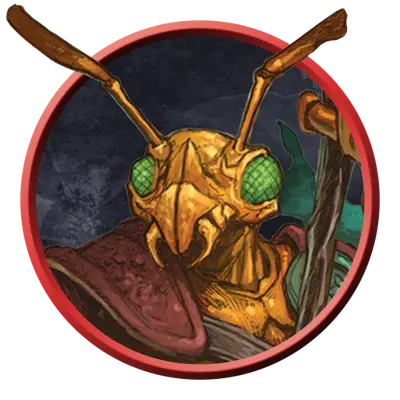

Три-крин мародёр
Thri-kreen Marauder
Среднее Чудовище, Нейтральное

Класс Защиты 15 Инициатива +2 (12)
Хиты 33 (6к8 + 6)
Скорость 40 футов
| мод | спас | ||
|---|---|---|---|
| СИЛ | 12 | +1 | +1 |
| ЛОВ | 15 | +2 | +2 |
| ТЕЛ | 13 | +1 | +1 |
| мод | спас | ||
|---|---|---|---|
| ИНТ | 8 | −1 | −1 |
| МДР | 12 | +1 | +1 |
| ХАР | 7 | −2 | −2 |
Чувства Тёмное зрение 60 футов, пассивное Восприятие 13
Языки Три-кринский, Телепатия 60 фт.
Опасность 1 (200 опыта; БВ +2)
Действия
Мультиатака. Три-крин совершает две атаки Гиткой или Чаткчей в любой комбинации.
Гитка. Бросок рукопашной атаки: +3, досягаемость 5 фт. Попадание: 5 (1к8 + 1) Рубящего урона плюс 2 (1к4) урона Ядом.
Чаткча. Бросок дальнобойной атаки: +4, дистанция 30/120 фт. Попадание: 5 (1к6 + 2) Рубящего урона.
Бонусные действия
Скачок. Три-крин прыгает на расстояние до 15 футов, затрачивая 5 футов перемещения.
Бонус мастерства +2
Среда обитания Луга, Пустыня
Сокровища Оружейные
Три-крины
Богомолоподобные псионики и выживальщики
Три-крины — это похожие на богомолов скитальцы, которые для выживания полагаются на врождённый камуфляж и психические силы. Разные группы три-кринов обладают отличными друг от друга хитиновыми покровами: от каменистых оттенков у обитателей пустынь до ярких красок у жителей цветущих лесов. Хотя их язык и несёт в себе отчётливое насекомое звучание, для общения три-крины часто прибегают к телепатии; целые отряды способны стремительно обмениваться обилием подробной информации, не издавая при этом ни звука.
Три-крины мародёры пользуются оружием, изготовленным из камня и кости, — а именно копьеподобными гитками и метательными клинками, зовущимися чаткча.